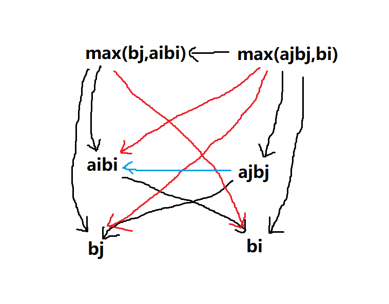
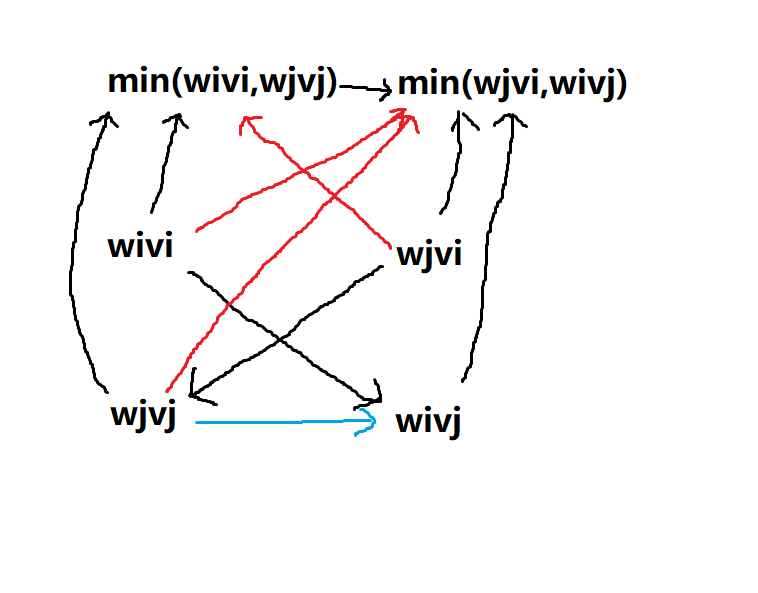

striving & singing
按照计划，本周的学习重点依然是基础算法。
https://www.luogu.com.cn/problem/P2672
这题很久以前写过，但有必要复习一下思路。
贪心，主要提供了另一种贪心的思路：在当前已有答案的基础上考虑新答案。至于在本题中为什么是正确的，似乎是用反证法但具体不会证，在考场上也没有必要证出来。
https://www.luogu.com.cn/problem/P1314
二分加前缀和。二分很有必要重新复习一遍，之前在$SDOI2020$写$D1T1$时本来要写权值线段树+二分，结果写完线段树发现几个月没学$OI$不会写二分了，最后丢了$60$分，绝了(当然主要还是因为我太菜了)。
以前写二分都是设当前区间为$[l,r]$，经常写错，今天看了某大佬整理的二分写法(https://www.zhihu.com/question/36132386 )，再重新总结一下。
二分的思路：当前区间为$[l,r)$，求出区间终点$\texttt{mid}$然后根据中点判断区间端点怎么移动。主要考虑这几个东西：
l < r；默认序列是非降序列，若序列为下降序列，把$2$和$3$倒过来即可。
这样，二分的思路就十分清晰明了了。另外，某些题比如这题中要求的是最接近于$v$的数而不是大于等于$v$的最小的数，这种情况可以二分求出大于等于$v$的最小的数后，在$l$与$l-1$之间取舍。
再来看这题，很容易看出来检验值关于$w$是单调的，然后$w=0$时$y$最大，$w > maxw$时$y$最小，二分边界也就确定了。$y$的值可以用前缀和以$O(n+m)$复杂度求出。总复杂度$O((n+m)log\max{w_i})$。
还有就是，一定要仔细检查变量类型，第一次写完时很多地方忘了加$\texttt{long long}$。
相同难度下一写二分题就感觉这么得心应手，贪心题一直都对我很难啊。有时间还得继续加强练习。
#include<cstdio>
const int MAXN = 200100;
int n, m, w[MAXN], v[MAXN], l[MAXN], r[MAXN], maxw;
long long s, wsum[MAXN], vsum[MAXN];
inline long long min(long long a, long long b) { return a < b ? a : b; }
inline int max(int a, int b) { return a > b ? a : b; }
inline long long abs(long long x) { return x > 0 ? x : -x; }
long long y(long long wx) {
long long ans = 0;
for (int i = 1; i <= n; i++) {
wsum[i] = wsum[i - 1] + (w[i] >= wx ? 1 : 0);
vsum[i] = vsum[i - 1] + (w[i] >= wx ? v[i] : 0);
}
for (int i = 1; i <= m; i++)
ans += (wsum[r[i]] - wsum[l[i] - 1]) * (vsum[r[i]] - vsum[l[i] - 1]);
return ans;
}
int main() {
scanf("%d%d%lld", &n, &m, &s);
for (int i = 1; i <= n; i++) scanf("%d%d", &w[i], &v[i]), maxw = max(maxw, w[i]);
for (int i = 1; i <= m; i++) scanf("%d%d", &l[i], &r[i]);
long long lx = 1, rx = maxw + 1;
while (lx < rx) {
long long mid = lx + (rx - lx) / 2;
if (y(mid) <= s) rx = mid;
else lx = mid + 1;
}
printf("%lld\n", min(abs(y(lx) - s), abs(y(lx - 1) - s)));
return 0;
}今晚太困了就早睡觉了，因为我每次刷题加上写总结至少得搞到$0$点以后，有时候$1$点或者最晚$2$点，然后$6$点半就得起来去学文化课，有点顶不住。
https://www.luogu.com.cn/problem/P4343
这题也是二分。感觉难度标得偏高了，我感觉绿题封顶，或者黄题。前天那题也是，绿题更合理一些。不过蓝题以下的luogu不管，我说了也没用。
显然$n$越大切的题少，然后直接做两次二分即可。
不过做这题时我看错了输出格式，无解的情况应该输出一个$-1$，我写成了输出两行每行一个$-1$，半个小时才调了出来，太菜了。
#include<cstdio>
int l, x[100100];
long long k;
inline int check(long long n) {
long long y = 0;
int cnt = 0;
for (int i = 1; i <= l; i++) {
y += x[i];
if (y < 0) y = 0;
else if (y >= n) y = 0, cnt++;
}
return cnt;
}
int main() {
scanf("%d%lld", &l, &k);
for (int i = 1; i <= l; i++) scanf("%d", &x[i]);
long long lx = 1, rx = 0x3fffffffffffffff;
while (lx < rx) {
long long mid = lx + (rx - lx >> 1);
if (check(mid) <= k) rx = mid;
else lx = mid + 1;
}
if (check(lx) ^ k) printf("-1\n");
else {
printf("%lld ", lx);
lx = 1, rx = 0x3fffffffffffffff;
while (lx < rx) {
long long mid = lx + (rx - lx >> 1);
if (check(mid) < k) rx = mid;
else lx = mid + 1;
}
printf("%lld\n", lx - 1);
}
return 0;
}https://www.luogu.com.cn/problem/P3743
实数范围内的二分。注意精度，$\texttt{eps}$以后用$1^{-6}$，用$1^{-8}$某些点会超时。
#include<cstdio>
int n, p, a[100100], b[100100];
long long suma;
const double eps = 1e-6;
bool check(double t) {
double sum = 0;
for (int i = 1; i <= n; i++)
if (b[i] < a[i] * t) sum += a[i] * t - b[i];
return sum <= t * p;
}
int main() {
scanf("%d%d", &n, &p);
for (int i = 1; i <= n; i++) scanf("%d%d", &a[i], &b[i]), suma += a[i];
if (suma <= p) printf("-1\n");
else {
double l = eps, r = 1e10;
while (r - l > eps) {
double mid = l + (r - l) / 2;
if (check(mid)) l = mid + eps;
else r = mid;
}
printf("%lf\n", l);
}
return 0;
}因为文化课的缘故，今天时间不多，就只刷道水题吧。
https://www.luogu.com.cn/problem/P2280
直接二维前缀和，黄题还差不多。注意特判$m$大于$a$或$b$的情况。
#include<cstdio>
int n, m, sum[5010][5010], ans, a, b;
inline int min(int a, int b) { return a < b ? a : b; }
inline int max(int a, int b) { return a > b ? a : b; }
int main() {
scanf("%d%d", &n, &m);
for (int i = 1; i <= n; i++) {
int x, y, v;
scanf("%d%d%d", &x, &y, &v);
x++, y++;
sum[x][y] += v;
a = max(a, x), b = max(b, y);
}
for (int i = 1; i <= a; i++)
for (int j = 1; j <= b; j++) sum[i][j] += sum[i - 1][j] + sum[i][j - 1] - sum[i - 1][j - 1];
for (int i = min(m, a); i <= a; i++)
for (int j = min(m, a); j <= b; j++)
ans = max(ans, sum[i][j] - sum[max(i - m, 0)][j] - sum[i][max(j - m, 0)] + sum[max(i - m, 0)][max(j - m, 0)]);
printf("%d\n", ans);
return 0;
}今天出了道题(https://www.luogu.com.cn/problem/U120958 )。然后主要是去思考贪心的邻项交换算法。关于里面的带$\min$或$\max$的不等式一直不知道怎么处理。我自己找到的方法是画有向图，每个偏序关系对应一条有向边。例如国王游戏那题中，已知$\max(b_j,a_ib_i)<\max(a_jb_j,b_i)$，则可以画出下面这张图：
其中黑边是初始条件，红边是根据初始条件推导出的条件，蓝边是结论(可以用反证法证明)。
然后对于$\begin{cases}\min(w_iv_i,w_jv_j)>\min(w_jv_i,w_iv_j)\\v_i>v_j\end{cases}$，则可以画出这样一张图：
结论是$w_i<w_j$。
这种证明并不严谨，因为只考虑了大于的情况，没有考虑等于。有时间再仔细考虑一下。
另外，我在网上问了关于这种不等式如何处理的问题，然而没人理我。少见地感到很无助，也更加不信赖人与人的关系；不过毕竟别人也没有义务帮我，我也不能说啥。
今天做语文阅读题时读到一篇关于庄子的思想的文章，感觉与我曾经的某些想法不谋而合(当然我没有庄子那么高的高度)。人的本性是欢乐的，而现代文明却在人与人之间筑起了难以翻越的高墙...我不喜欢过度讲求礼仪的人，我觉得这种人是虚伪的。人本应是率真的...扯远了，不过反正也没人看到，都是随便写写，无所谓了。
继续总结一下昨天的邻项交换中的不等式处理。
对于$\max$，有一个显然的性质：如果$x>a$且$x>b$，那么$x>\max(a,b)$。
对于$\min$，有一个相对的性质：如果$x<a$且$x<b$，那么$x<\min(a,b)$。
利用这两个性质可以在画出的有向图上新建边(目前的找到的新建边的方法只有利用传递性和利用上面这两个式子)，配合反证法就可以得出结论。
而等于的情况，只在$\min$和$\max$函数与其自变量之间的连边，以及反证法这两种情况中出现。但是，等于的情况似乎并不影响证明结论。
https://www.luogu.com.cn/problem/P4552
将每个数差分一下，问题就变为每次操作把两个数分别加减一，或者把一个数加一，或者把一个数减一，使最后每个数都是$0$。要使操作数最少，可以每次操作把正数和负数配对，分别减一和加一，最后剩下一个数，将它单独加减一即可。
记正数的和为$x$，负数的和为$y$，则需要的最少操作数为$\max(x,y)$。最后剩下的数(即数列的第一个数)的绝对值是$abs(x,y)$，又因为后面的数都和第一个数相等，所以可能的数列数量等价于可能的第一个数的数量，也就是$abs(x,y)+1$(要算上$0$)。
#include<cstdio>
int n, a[100100], c[100100];
long long x, y;
inline long long max(long long a, long long b) { return a > b ? a : b; }
inline long long abs(long long x) { return x > 0 ? x : -x; }
int main() {
scanf("%d", &n);
for (int i = 1; i <= n; i++) scanf("%d", &a[i]);
for (int i = 2; i <= n; i++) c[i] = a[i] - a[i - 1];
for (int i = 1; i <= n; i++) {
if (c[i] > 0) x += c[i];
else if (c[i] < 0) y += -c[i];
}
printf("%lld\n%lld", max(x, y), abs(x - y) + 1);
return 0;
}https://www.luogu.com.cn/problem/P3017
二分最少获得的巧克力碎屑，然后$O(n^2)$判断是否可行，在每一维求出当前限制下最多能切几块，如果大于$a$或者$b$就可行。
第一次写时十分降智写了个暴搜判断，结果$\texttt{TLE}$了。需要注意的是要求的不是切的方案，而是是否可行，所以没有必要搜索。
#include<cstdio>
int n, m, w[510][510], a, b, sumw;
inline int sum(int x1, int y1, int x2, int y2) { return w[x2][y2] - w[x1 - 1][y2] - w[x2][y1 - 1] + w[x1 - 1][y1 - 1]; }
bool check2(int l, int r, int limit) {
int cnt = 0, lst = 0;
for (int i = 1; i <= m; i++) {
if (sum(l, lst + 1, r, i) < limit) continue;
cnt++;
lst = i;
}
return cnt >= b;
}
bool check1(int limit) {
int cnt = 0, lst = 0;
for (int i = 1; i <= n; i++) {
if (sum(lst + 1, 1, i, m) < limit) continue;
if (!check2(lst + 1, i, limit)) continue;
cnt++;
lst = i;
}
return cnt >= a;
}
int main() {
scanf("%d%d%d%d", &n, &m, &a, &b);
for (int i = 1; i <= n; i++)
for (int j = 1; j <= m; j++) scanf("%d", &w[i][j]), sumw += w[i][j], w[i][j] += w[i - 1][j] + w[i][j - 1] - w[i - 1][j - 1];
int l = 0, r = sumw / (a * b) + 1;
while (l < r) {
int mid = l + (r - l >> 1);
if (check1(mid)) l = mid + 1;
else r = mid;
}
printf("%d\n", l - 1);
return 0;
}https://www.luogu.com.cn/problem/P4403
设$v(i)$表示$[1,i]$之间共有多少人，因为偶数加偶数等于偶数，奇数加偶数等于奇数，因此若$v(x)\bmod 2=1$，说明奇数的位置在$[1,x]$之间，于是就有了单调性，直接二分即可。$v(i)$可以用$O(n)$的复杂度求出。
#include<cstdio>
int t, n, s[200100], e[200100], d[200100];
inline int min(int a, long long b) { return a < b ? a : b; }
int v(long long pos) {
int ans = 0;
for (int i = 1; i <= n; i++) {
int l = s[i], r = min(e[i], pos);
if (l > r) continue;
ans += (r - l) / d[i] + 1;
}
return ans;
}
int main() {
scanf("%d", &t);
while (t--) {
scanf("%d", &n);
for (int i = 1; i <= n; i++) scanf("%d%d%d", &s[i], &e[i], &d[i]);
long long l = 1, r = 1ll << 31;
while (l < r) {
long long mid = l + (r - l >> 1);
if (v(mid) % 2) r = mid;
else l = mid + 1;
}
if (v(l) % 2) printf("%lld %d\n", l, v(l) - v(l - 1));
else printf("Poor QIN Teng:(\n");
}
return 0;
}按照计划今天应该打模拟赛，我看到$\texttt{Codeforces}$上在举办$\texttt{Global Round 9}$，然后就参加了。时间是周六$\texttt{22:45}$至周日$\texttt{1:15}$，虽然是处于两天的边界处不过我就当作是周日打的模拟赛了。
这场比赛似乎很多是结论题，与国内比赛大不相同。这种题我做的少，又因为智商低于常人，一般猜不出结论，所以打得很菜，最后只过了$\texttt{B}$题，排名是第$7936$名(大约一万人参加)，$\texttt{Rating}$涨了四百多(两周前刚注册的账号，$\texttt{Rating}$是$0$，以前的账号不要了)。
https://codeforc.es/contest/1375/problem/A
只要让非负数和非正数交替就可以满足要求了。
#include<cstdio>
int t, n, a[110];
inline int abs(int x) { return x > 0 ? x : -x; }
int main() {
scanf("%d", &t);
while (t--) {
scanf("%d", &n);
for (int i = 1; i <= n; i++) scanf("%d", &a[i]);
for (int i = 1; i <= n; i++) {
if (i % 2) printf("%d ", abs(a[i]));
else printf("%d ", -abs(a[i]));
printf("\n");
}
}
return 0;
}https://codeforc.es/contest/1375/problem/B
可以考虑把所有位置都填满，如果一个位置大于这个位置上最多能填的数那么就不行，否则直接输出每个位置上最大能填的数。
#include<cstdio>
int t, n, m, a[310][310];
inline int limit(int x, int y) {
if ((x == 1 || x == n) && (y == 1 || y == m)) return 2;
if ((x == 1 || x == n) || (y == 1 || y == m)) return 3;
return 4;
}
int main() {
scanf("%d", &t);
while (t--) {
scanf("%d%d", &n, &m);
for (int i = 1; i <= n; i++)
for (int j = 1; j <= m; j++) scanf("%d", &a[i][j]);
bool ans = true;
for (int i = 1; i <= n; i++)
for (int j = 1; j <= m; j++)
if (a[i][j] > limit(i, j)) ans = false;
if (ans) {
printf("YES\n");
for (int i = 1; i <= n; i++) {
for (int j = 1; j <= m; j++) printf("%d ", limit(i, j));
printf("\n");
}
}
else printf("NO\n");
}
return 0;
}https://codeforc.es/contest/1375/problem/C
猜结论，如果$a[1]<a[n]$那么可以，否则不可以。
#include<cstdio>
int t, n, a[300100];
int main() {
scanf("%d", &t);
while (t--) {
scanf("%d", &n);
for (int i = 1; i <= n; i++) scanf("%d", &a[i]);
if (a[1] < a[n]) printf("YES\n");
else printf("NO\n");
}
return 0;
}后面的题我没看，就不写了。
return